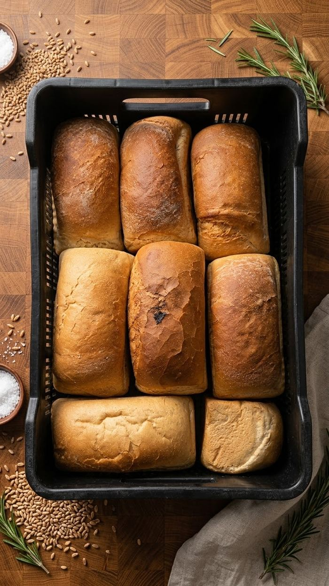
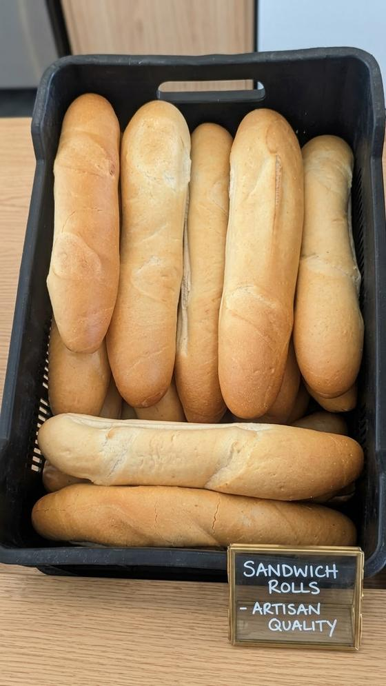
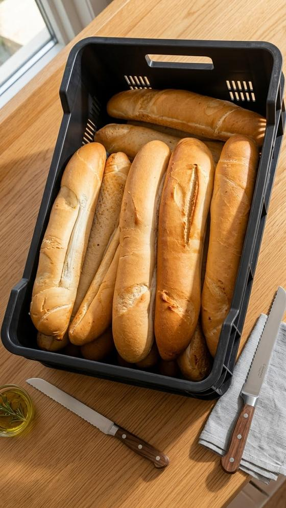
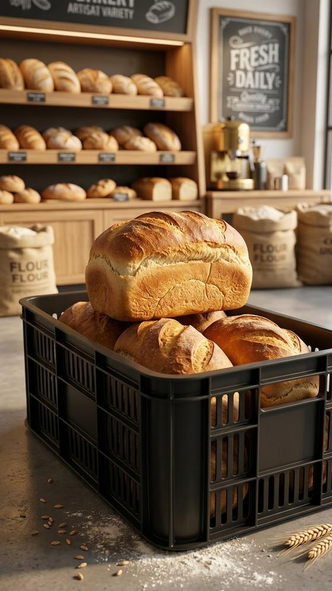

Pains et petits pains sortent de notre production quotidienne et sont conditionnés en bacs pour nos Dépositaires et Mamans partenaires, prêts à être livrés frais.
Je suis Dépositaire / Maman — Commander
Une gamme simple et régulière de pains et petits pains, pensée pour un réseau de revente — mêmes produits, même qualité, chaque jour.

Petits pains sandwich, qualité artisanale.

Baguettes fraîches du jour.

Pains variés, prêts pour nos revendeurs.
Passez votre demande de commande de bacs directement depuis ce site — notre équipe la traite ensuite avec vous.
Passer une demande de commande